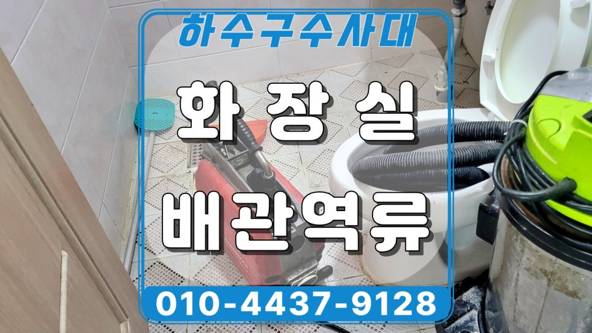
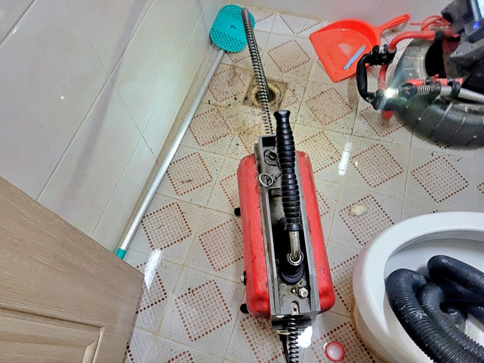
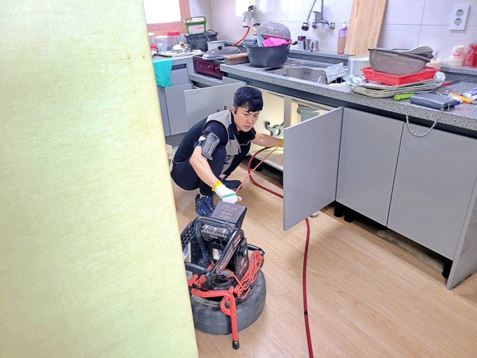
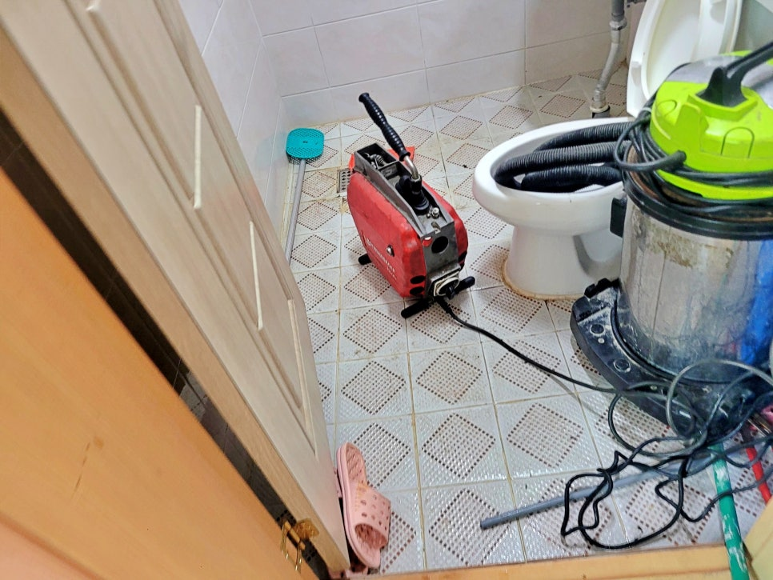
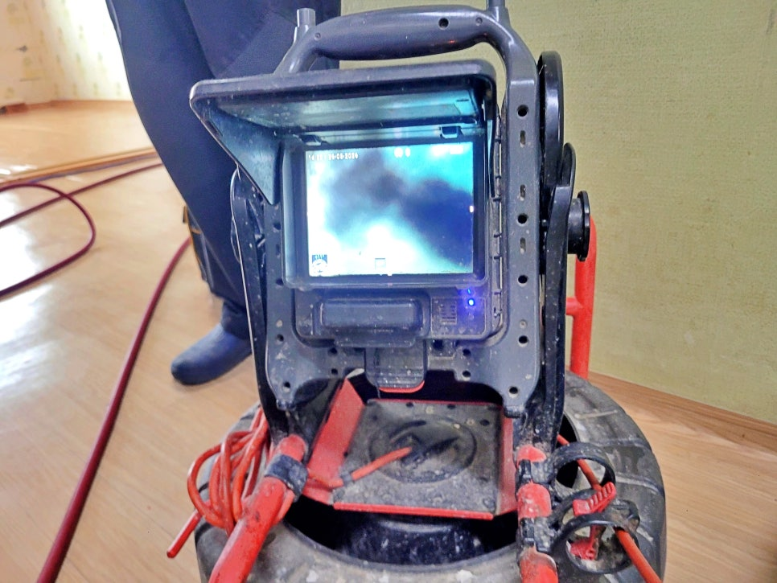
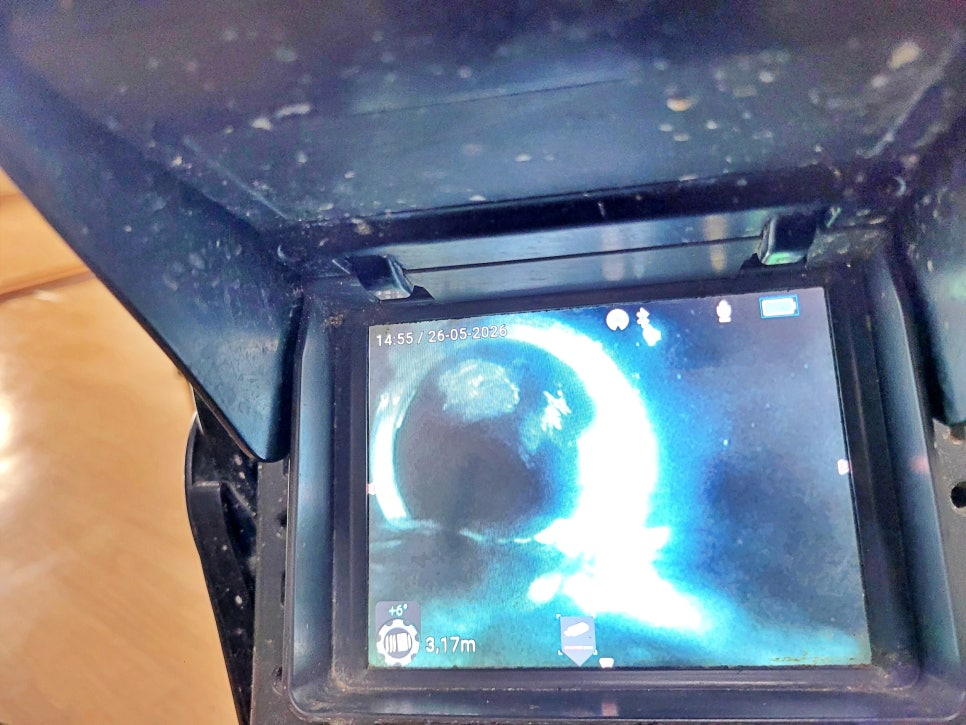
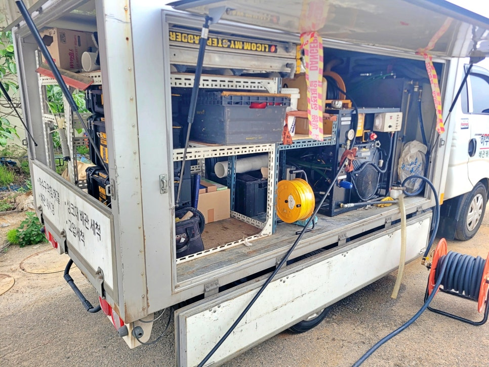

🏠 안산 선부동 빌라 하수구역류, 싱크대 사용하면 화장실에서 물이 역류해요
안산 싱크대막힘 전문 시공 후기

📋 작업 개요
- 위치: 안산
- 서비스 유형: 싱크대막힘, 하수구막힘, 배관막힘, 역류해결, 뚫는업체, 배관청소, 고압세척
- 작업 일시: 8시간 전
- 업체명: 하수구수사대 (010-5615-2118)
🔍 문제 상황
안산 단원구 선부동 하수구역류 사례,
싱크대를 사용 후 화장실에서 물이
역류하는 문제를 고압세척으로 해결하다.
안녕하세요.
안산 단원구 선부동 하수구역류 청소전문
하수구수사대입니다.
이번 현장은 안산 단원구 선부동에 있는
빌라 하수구역류 현장이었습니다.
안산 선부동 화장실 하수구역류 현장
처음 연락을 주신 내용은 간단했습니다.
“싱크대에서 물을 쓰면
화장실 쪽으로 물이 올라와요.”
이 말만 들으면 싱크대 배관 문제처럼
생각하기 쉽습니다.
하지만 실제 현장에서는 싱크대와 화장실
배관이 같은 라인으로 이어져 있거나,
아래쪽 공용 배관 쪽에서 막힘이 생기면
물이 낮은 쪽으로 밀려 올라오는 경우가
적지 않습니다.
이번 선부동 빌라 하수구역류 현장도
그런 가능성을 먼저 보고 확인했습니다.
도착 후 싱크대 물을 흘려보니
배수가 시원하게 빠지지 않았고,
시간차를 두고 화장실 배수구 쪽으로
물이 올라오는 증상이 확인됐습니다.
단순히 화장실만 막힌 상황이라기보다

🔎 원인 분석
💡 전문가 진단: 안산 단원구 선부동 하수구역류 사례,싱크대를 사용 후 화장실에서 물이역류하는 문제를 고압세척으로 해결하다.
싱크대에서 내려간 물이 배관 안에서
제대로 빠지지 못하고 되밀리는 상태였습니다.
안산 선부동 하수구역류 원인 확인
스프링 통수 작업 과정
먼저 스프링 장비를 이용해
통수 작업부터 진행했습니다.
막힘 현장에서는 무조건 고압세척부터
진행하는 것이 정답은 아닙니다.
배관 상태와 막힌 위치를 확인하지 않고
강하게 밀어붙이면 오히려 배관에 부담을
줄 수 있기 때문인데요.
그래서 이번 선부동 하수구역류 현장도
스프링으로 1차 통수 작업을 진행해
물길을 확보한 뒤, 배관 내부를
내시경카메라로 확인했습니다.
내시경 화면을 보니 원인이 분명했습니다.
배관 안쪽에 기름덩어리가
두껍게 붙어 있었고,
그 위로 음식물 찌꺼기와 이물질이
쌓이면서 통로가 좁아진 상태였습니다.
그래서 싱크대에서 사용한 물이
이 구간을 지나지 못하고 정체되다 보니
결국 화장실 쪽으로 역류가 나타난 것이죠.
이런 경우 겉으로는 물이 한 번 빠지는 것처럼
보일 수 있습니다.
하지만 배관 안쪽에 기름때가 남아 있으면

🔧 작업 과정
며칠 지나 다시 막히거나,
사용량이 많을 때 또 역류가 생길 수 있습니다.
그래서 단순 통수로 끝내면
재발 가능성이 높습니다.
싱크대 배관 기름막힘 고압세척
하수구수사대 고압세척 작업 차량 이미지
안산 선부동 빌라 하수구역류 현장에
원인을 확인한 뒤에는 고압세척 장비로
배관청소를 진행했는데요.
고압세척은 배관 안쪽에 붙은 기름때와
찌꺼기를 물의 압력으로 씻어내는 작업입니다.
고압세척 작업 과정
스프링이 막힌 구간을 뚫어 길을 내는
작업이라면, 고압세척은 배관 안쪽 벽면에
붙은 오염물을 정리하는 작업에 가깝습니다.
이번 화장실 하수구역류 현장처럼
기름덩어리가 원인인 경우에는
스프링만으로는 부족합니다.
통로만 확보하고 끝내면 남아 있던 기름층에
다시 찌꺼기가 달라붙기 때문인데요.
작업 중에는 내시경카메라로 배관 내부를
계속 확인하면서 세척 범위를 조절했습니다.
물이 흐르는 방향, 막힘이 심한 구간,
세척 후 남아 있는 이물질까지 확인하며
필요한 구간을 반복해서 청소했습니다.
하수구역류 현장 배수 테스트 과정
고압세척 후 싱크대 물을 다시 흘려보니
배수가 부드럽게 내려갔고,
화장실 쪽으로 물이 올라오던 증상도
확인되지 않았습니다.
마지막으로 여러 번 물을 사용하며
역류 여부를 재확인했습니다.
안산 선부동 하수구역류 작업을 마무리하며
이번 안산 선부동 빌라 하수구역류 현장은
싱크대 사용 후 화장실로 물이 역류했지만,
원인은 화장실 단독 막힘이 아니라
배관 내부에 쌓인 기름덩어리였습니다.
싱크대 물을 사용할 때
화장실 배수구에서 물이 올라온다면
이미 배관 안쪽에서 막힘이 진행되고 있을
가능성이 큽니다.


✅ 작업 완료
이럴 때는 세정제나 뜨거운 물만 반복하기보다
배관 상태를 먼저 확인하는 것이 좋은데요.
하수구수사대는
막힌 곳만 급하게 뚫는 방식이 아니라
현장에서 원인을 보고,
꼭 필요한 장비로 막힌 배관을 뚫은 뒤
물이 제대로 빠지는지 다시 확인합니다.
안산 선부동 빌라처럼
싱크대 물을 쓰면 화장실로 역류하는 현장도
원인부터 확인해 확실하게 해결하겠습니다.
#안산하수구역류 #선부동하수구역류 #안산하수구막힘 #선부동하수구막힘 #단원구빌라하수구역류 #선부동싱크대역류 #안산선부동화장실역류 #안산고압세척 #하수구수사대




⚠️ 주방 싱크대 배관 막힘 예방 수칙
- ✅ 기름기가 묻은 식기나 프라이팬은 설거지 전 키친타올로 반드시 기름때를 닦아내세요.
- ✅ 주기적으로 싱크대 개수대에 뜨거운 물을 가득 받아 한 번에 내려 배관 내부 기름을 씻어내세요.
- ✅ 배수구 거름망을 미세한 필터로 사용하시고 음식물 찌꺼기가 틈으로 새어 들지 않게 관리하세요.
- ✅ 베이킹소다와 식초를 뜨거운 물과 함께 일주일에 한 번씩 부어주면 배관 살균과 막힘 예방에 좋습니다.
💡 핵심 정리
- 확실한 장비 작업(내시경 점검 및 샤프트 스케일링)으로 원인을 뿌리 뽑습니다.
- 작업 후 1년 이내에 동일한 부위 재발 시 100% 무상 A/S 서비스를 보장합니다.
- 서울 · 경기 · 인천 전 지역에 24시간 언제든 긴급 출동할 수 있도록 항시 대기 중입니다.
❓ 자주 묻는 질문 (FAQ)
🚨 안산 싱크대막힘 문제로 고민이신가요?
정확한 원인 진단과 확실한 시공으로 재발 없는 해결을 약속드립니다.
24시간 긴급 출동 | 서울 · 경기 · 인천 전지역 | 1년 내 재발 시 무상 A/S